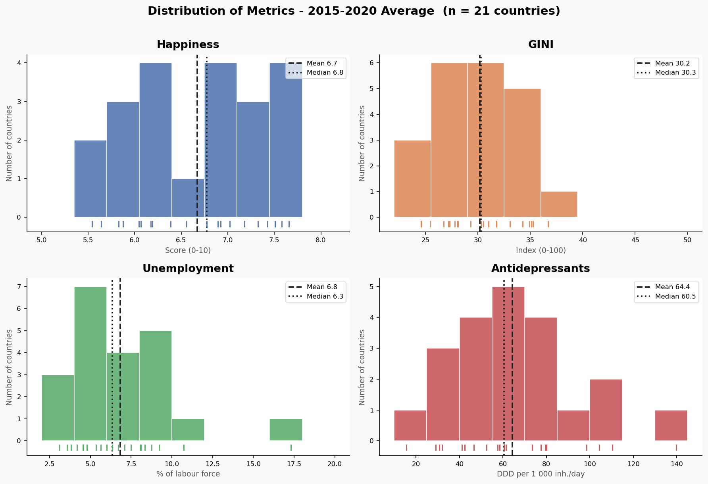
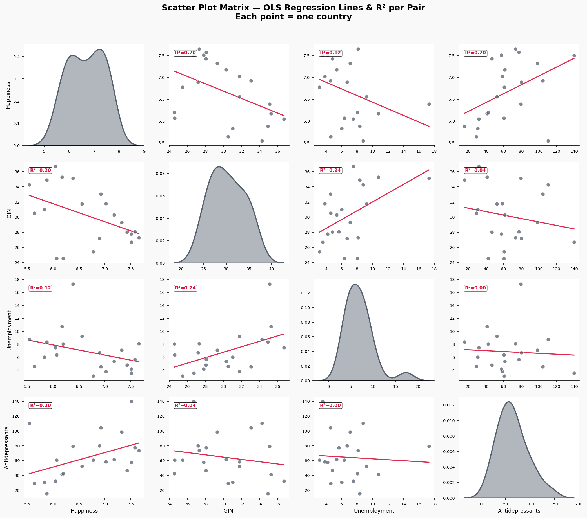

Why do the happiest countries in Europe consume the most antidepressants? A data-driven investigation across 21 nations.
Year after year, Nordic nations top the World Happiness Report [5]. School is free. Healthcare is universal. Parental leave is generous. Streets are safe, corruption is rare, and trust in government and society runs deep. By almost every measure, these are the best places on Earth to be alive. And yet, these same countries also lead the OECD in antidepressant consumption [6], prescribing up to 140 defined daily doses per 1,000 people every single day.[4]
This is what is called "The Paradox of Happiness": the places where people say they are happiest are also where they take the most medication for depression. Are the happiness rankings a lie? Are these countries hiding collective misery behind a pharmaceutical veil? Or is something more subtle at work?
To investigate, we assembled data on 21 European countries from five sources: the World Happiness Report (2015-2020) [5], World Bank GINI coefficients (inequality) [3], World Bank unemployment rates [2], OECD antidepressant prescription statistics [6], and the European Social Survey Round 9 (2018) [4] for institutional trust and social connectedness. We averaged across years to o filter out the annual noise and expose the deeper structural patterns that define each nation
The chart below makes the paradox unmistakable. On the left, countries ranked by happiness. On the right, the same countries ranked by antidepressant usage. Notice how the blue bars, representing the majority of Scandinavian nations, cluster near the top half of both lists.
A correlation of R = 0.45 is not trivial. It means that, on average, every step up in national happiness is associated with more antidepressant prescriptions. This is the exact opposite of what pure intuition would suggest. Let's dig deeper into the data to understand why.
Before searching for explanations, we need to understand what we're working with. The distributions below reveal the spread of our four metrics across 21 nations. Happiness [5] is relatively concentrated (most countries between 5.5 and 7.8), but antidepressant use [6] spans an enormous range — from barely 16 DDD/1,000/day in Latvia to a staggering 140 in Iceland. Inequality (GINI) [3] and unemployment [2] show their own characteristic spreads, with Southern European outliers pulling the tails.

The scatter matrix below maps every pairwise relationship among our four variables. Each cell shows an OLS regression line and its R² (the proportion of variance explained). Several patterns emerge:
For now the paradox holds: even after controlling for the obvious economic suspects (inequality, unemployment), the positive association between happiness and antidepressants persists. Something else is driving it.

Geography tells a clear story. Toggle between the four maps — Happiness, Antidepressants, GINI, and Unemployment — and a consistent north-south gradient emerges across all of them. The Nordic and Northwestern countries score high on happiness, medicate more, and enjoy lower inequality and unemployment. As you move south and east, the picture inverts. The most striking observation is how closely the Happiness and Antidepressant maps mirror each other: Portugal and Norway stand out as the clearest outliers, with high antidepressant consumption but low happiness, and vice versa respectively.
To move beyond simple correlations, we used K-Means clustering to discover natural groupings among the 21 countries based on all four metrics simultaneously. We evaluated K = 2 through 8 using the silhouette score (a measure of how well-separated the clusters are). K = 2 scored highest (0.362) but offered too little diversity between clusters; K = 3 provided the best trade-off between interpretability, cluster balance, and score (0.316) (with no singleton clusters). K ≥ 5 produced meaningless one-country clusters. PCA (Principal Component Analysis) then projects these three groups into three dimensions for interactive visualization, capturing 88.6% of total variance.
The clusters tell a compelling story:
A single averaged value might be a fluke. But what if we watch the paradox unfold year by year? The animated scatter below tracks each country from 2015 to 2020 through Antidepressant Use vs. Happiness score, with bubble size encoding unemployment rate. Press play and notice three trends: a slight increase in happiness across all countries, an overall shift to the right (higher antidepressant use), and a slight decrease in unemployment (shrinking bubbles). The paradox is growing, structural, and not momentary.
Pay particular attention to Portugal and Spain: over the years they become outliers to the paradox, ending up in the top consumer of antidepressants while maintaining low happiness scores. All other countries tend to stay in their area, maintaining roughly the same distances to neighbouring points.
We've established the paradox and shown it's partially true, persistent throughout the years, and has some geographic patterns. But we haven't explained why there are still some outliers and if we can find a better predictor. For that, we turn to the European Social Survey (Round 9, 2018) [4] one of the highest-quality cross-national surveys in the world, with ~50,000 respondents answering detailed questions about their trust in institutions, social connections, and civic engagement.
From six ESS [4] variables, we constructed two composite indices:
The result is the single most striking finding in our analysis:
Institutional Trust explains 75% of the cross-country variation in happiness (R² = 0.749, p < 0.0001).
This makes every other predictor we examined very weak. Not GINI (R² = 0.20), not unemployment (R² = 0.12), not antidepressants (R² = 0.20). Trust is the master variable. Countries where people trust their government, their neighbors, and their democratic institutions are overwhelmingly happier.
And here is, in our point of view, the key to resolving the paradox: these same high-trust societies have
destigmatized mental healthcare. When you trust your doctor, your
health system, and your society not to judge you, you're far more likely to seek help
for depression or mental health issues, and that help often comes in the form of antidepressants. The high
prescription rates in the cluster 0 don't signify artificial happiness; they signal
a society that takes mental health as seriously as physical health - Sweden, Denmark, and Finland rank as the three most responsive European countries in mental healthcare [8], the same countries that top our happiness and antidepressant charts.
In Portugal, the outlier with high antidepressant use but low happiness, the trust levels are much lower,
suggesting that medication may be an automatic response to untreated mental health issues rather than a sign of awareness and care.
The radar chart below shows how each cluster scores across all six raw ESS variables (min-max normalized to 0-1). Cluster 0: The "happy, medicated" Nordic archetype, dominates on every single dimension of trust and social engagement. They discuss politics more, meet friends more often, participate in more social activities, trust people more, trust politicians more, and are more satisfied with their democracy.
Clusters 1 and 2 each have a distinct profile. Cluster 1 (Continental/Southern) has a notable spike in social meetings and activities, while Cluster 2 (Eastern) is more balanced overall but shows little to no satisfaction with democracy. The gap isn't in wealth or weather; it's in social fabric.
We've told our story, now it's your turn to explore. The interactive bubble chart below lets you swap the X-axis between six different variables: economic indicators (Unemployment, GINI) and social ones (Institutional Trust, Social Connection, Trust in People, Satisfaction with Democracy). Bubble size always encodes antidepressant consumption; color shows the K-Means cluster.
What patterns can you find?
Try this: Switch to "Trust in People" and watch how cleanly it separates the happy from the unhappy. Then try "GINI Index", the relationship is there but messier. Trust tells a tighter story than economics alone.